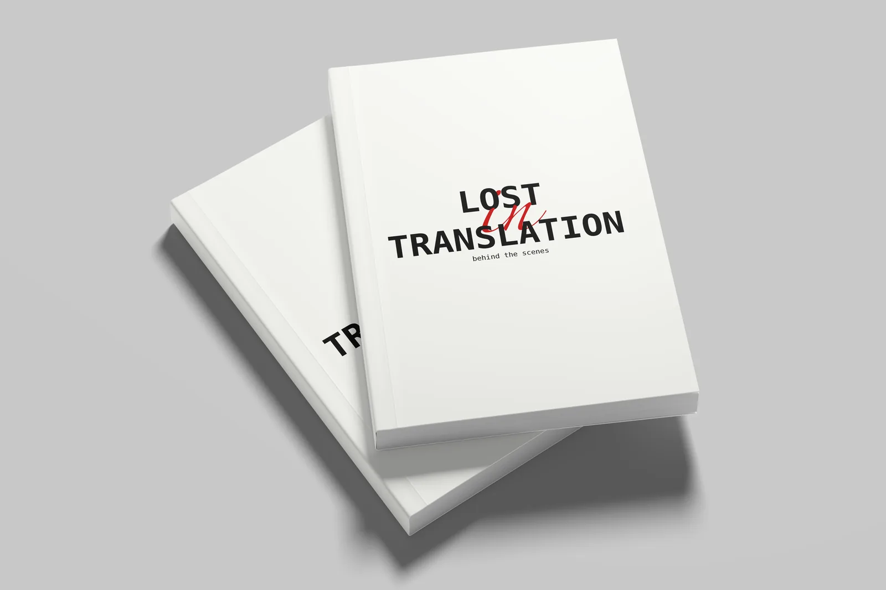
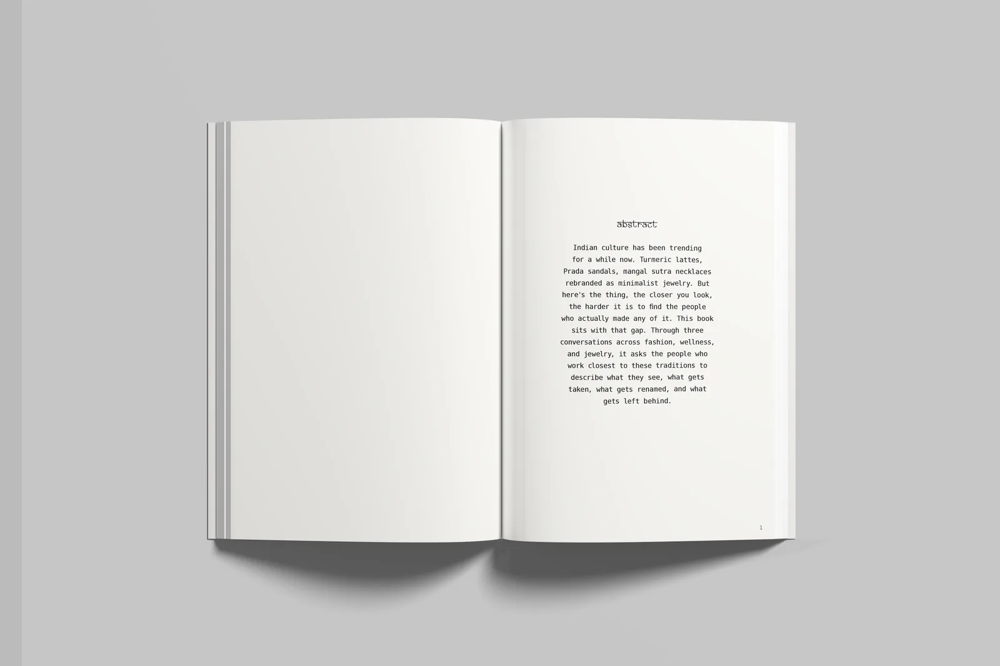
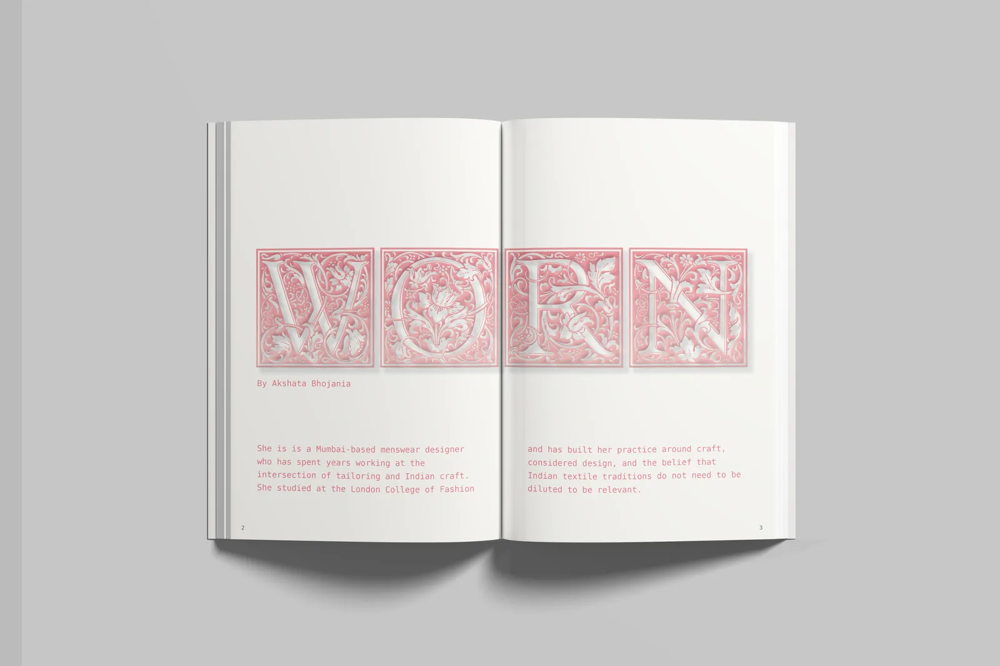
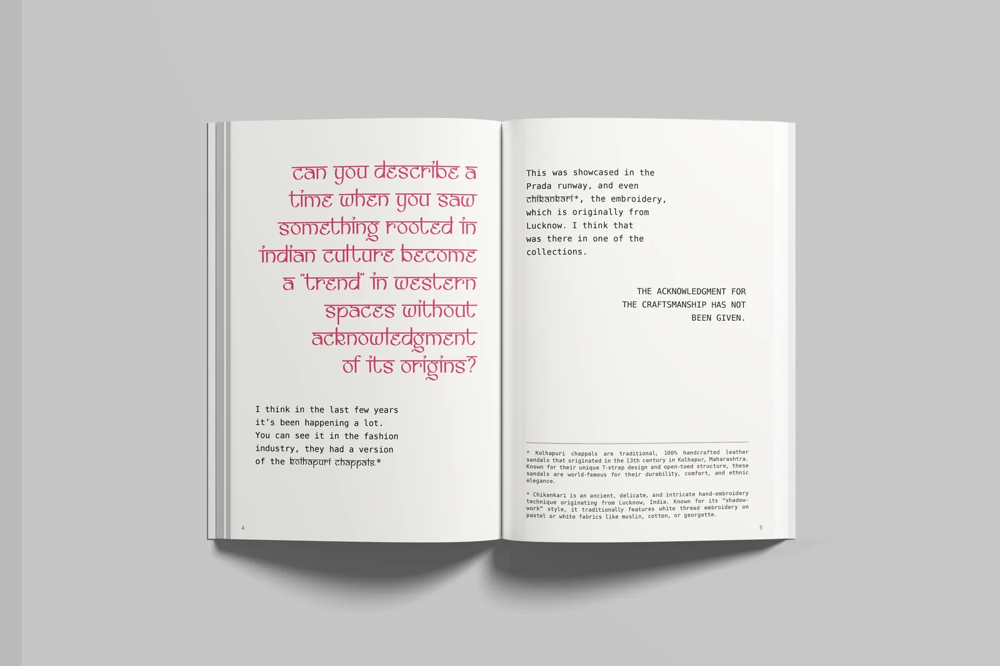
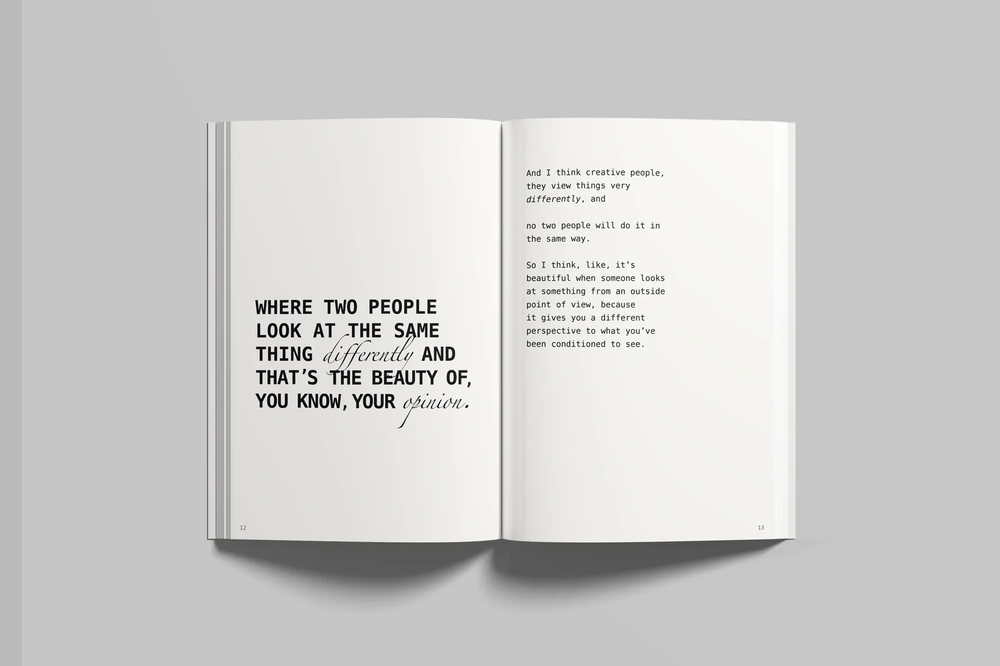
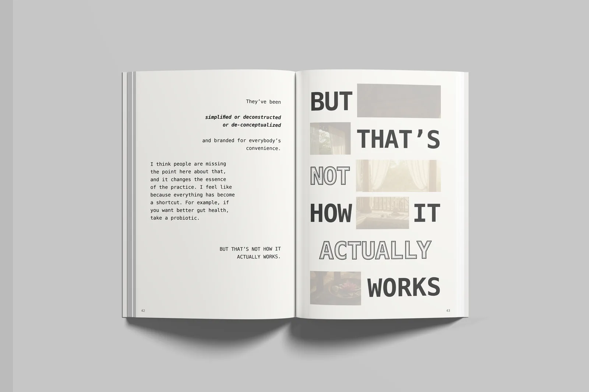
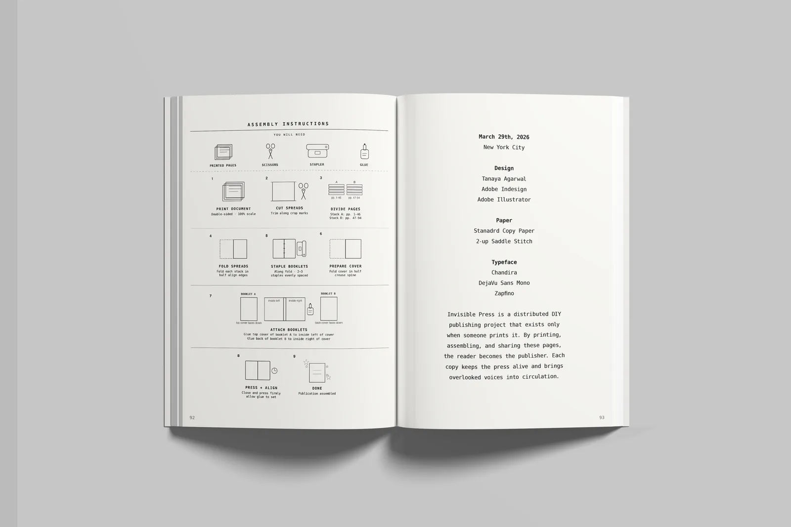

Print & Editorial
A self-published booklet about Indian craft rebranded as Western trend — typeset so the footnotes carry more weight than the headlines.

Indian culture has been trending for a while now — turmeric lattes, Prada sandals, mangal sutras rebranded as minimalist jewellery — and the closer you look, the harder it is to find the people who actually made any of it. This book sits with that gap. Three conversations across fashion, wellness and jewellery ask the people who work closest to these traditions what gets taken, what gets renamed, and what gets left behind.

The argument of the book is about who gets to speak first. A Western brand takes centre stage and the origin is reduced to an aesthetic, so the typography reverses that order. Questions are set in Chandira, a display face that references Devanagari letterforms without borrowing them, and they interrupt the page rather than introduce it. The answers sit in plain monospace, unembellished, so the voices are never dramatised. Where a conversation turns, a single phrase is pulled out at full scale and left alone.



Kolhapuri chappals, chikankari, vastu, ayurveda, turmeric, kanji — each term is struck through where it appears and rebuilt underneath. The footnotes are not small academic asides; they are given size and space, because context is the first thing that gets cut. Each interview carries its own colour over one restrained structure, and nothing bleeds off the page, which keeps the whole thing printable at home. The white space is doing the same work as the footnotes: it marks what is missing.

In hand
Printed two-up on standard copy paper, folded, stapled and glued — the assembly instructions are bound into the back. It is published through Invisible Press, a distributed DIY imprint that only exists when someone prints it: the reader becomes the publisher.

Credits — Published through Invisible Press, New York City, 2026. Interviews with Akshata Bhojania and Neetu Agarwal. Typefaces: Chandira, DejaVu Sans Mono, Zapfino. Design and typesetting: Tanaya Agarwal.